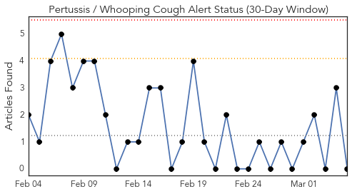
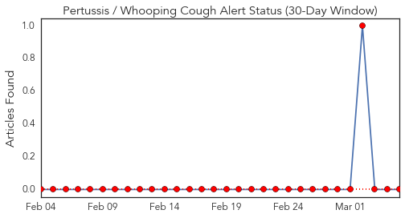
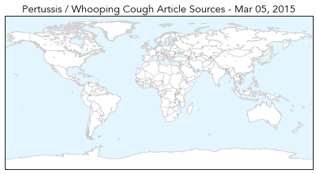
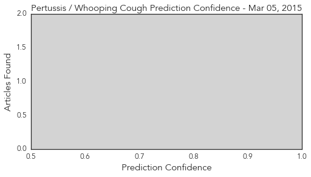
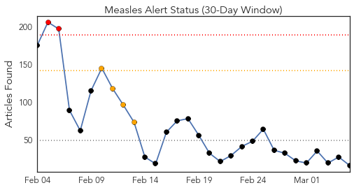
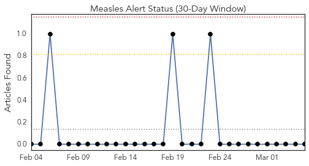
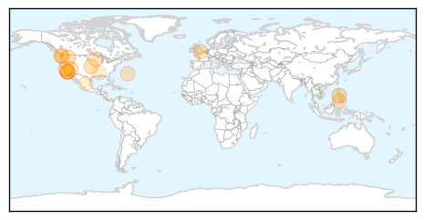
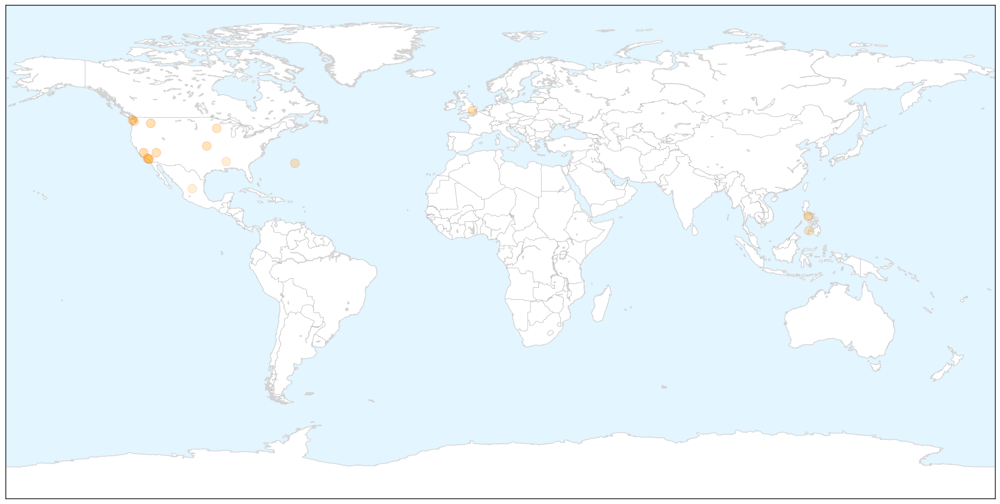
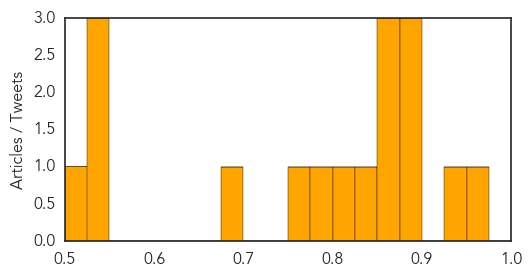

Pertussis
30-Day Web Trend
0 alerts, 0 warnings

30-Day Twitter Trend
1 alerts, 0 warnings

Article Locations

Article Confidences
Top Articles:
-
No articles found for Mar 05, 2015
Top Tweets:
-
No tweets found for Mar 05, 2015
Measles
30-Day Web Trend
2 alerts, 4 warnings

30-Day Twitter Trend
1 alerts, 0 warnings

Article Locations

X

Article Confidences
Top Articles:
- 0.961
- WSU study: Scare tactics aimed at vaccine skeptics may backfire
- 0.938
- Measles vaccine
- 0.894
- Measles test results pending for two more North Olympic Peninsula residents -- Port Angeles Port Townsend Sequim Forks Jefferson County Clallam County Olympic Peninsula Daily NEWS
- 0.894
- Measles test results pending for two more North Olympic Peninsula residents -- Port Angeles Port Townsend Sequim Forks Jefferson County Clallam County Olympic Peninsula Daily NEWS
- 0.890
- Beverly Hills News – BHUSD Holds Information Meeting On Measles
- 0.872
- Valley doctors get creative in encouraging measles vaccinations
- 0.865
- Get a grip on vaccination
- 0.859
- Doctors reiterate that vaccines are safe
- 0.841
- Aliso Niguel High School
- 0.814
- Sudan Vision Daily
- 0.781
- Group working to keep measles outbreak away from KC
- 0.753
- Measles relief for quarantined mom and child
- 0.697
- Measles: Adelaide man diagnosed with infectious disease after travelling to Philippines
- 0.546
- California lawmaker pushing child care worker vaccinations
- 0.546
- California lawmaker pushes child care worker vaccinations
- 0.544
- California lawmaker pushes child care worker vaccinations
- 0.508
- California lawmaker pushes child care worker vaccinations
Top Tweets:
-
No tweets found for Mar 05, 2015